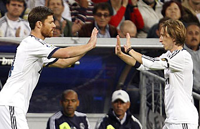
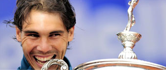
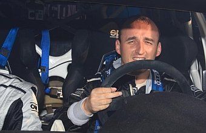
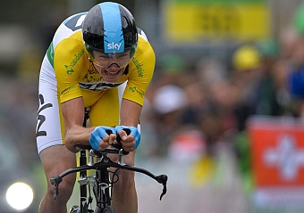
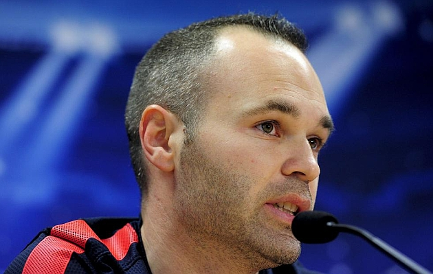
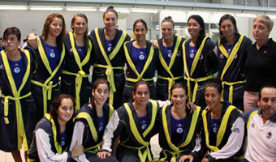
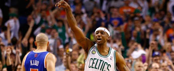

Modric podría ser la pareja de Xabi

Mourinho sabe que necesita darle un toque más ofensivo al Madrid en busca de multiplicar las ocasiones de gol. Toca arriesgar y la opción más factible es darle un aire más ofensivo al centro del campo.Pau no impide una debacle histórica y dice adiós Nada más caer eliminado, Pau Gasol se prepara para jugar el choque más difícil de su temporada como es lidiar con los continuos rumores sobre su salida del equipo. Querido por la afición, Gasol quiere seguir en los Lakers, pero sabe que eso no depende de él.Coto privado de Rafa

Rafael Nadal se proclamó por octava vez en su carrera campeón del Conde de Godó de Barcelona después de derrotar en la final a Nicolás Almagro.Kubica confirma que ha probado el simulador de Mercedes

Robert Kubica confirmó los rumores aparecidos la semana pasada al respecto de que había probado el simulador de Fórmula 1 de Mercedes en Brackley, Reino Unido.Froome gana el Tour de Romandia

El británico Christopher Froome (Sky Procycling) se adjudicó la Vuelta a Romandia tras disputarse la quinta y última etapa, una contrarreloj individual de 18,7 kilómetros que tuvo por escenario las calles de Ginebra.
Iniesta: "No tiene sentido hablar de fin de ciclo"

Andrés Iniesta dio explicaciones en rueda de prensa tras la dura derrota ante el Bayern. El centrocampista no cree que sea el fin de esta generación. "Veo injusto que se hable de cambio de ciclo. Este equipo, en los últimos cinco años, ha conseguido dos Champions, tres semifinales, estamos a punto de ganar la cuarta liga en cinco años, que sumando Supercopas y todo lo demás... bendito ciclo".El Sabadell, bicampeón de Europa

El CN Sabadell Astralpool se ha proclamado ganador de la Liga de Campeones femenina de waterpolo tras vencer hoy en la final, jugada en Budapest, al Kinef Kirishi ruso por 13-11, informa la federación española de natación. El CN sabadell, que logró su segundo título de la Copa de Campeones, llegó a la final tras batir en semifinales al Vouliagmeni NC por 9-8, mientras que el campeón ruso se deshizo por 16-10 del ZF Eger húngaro.Terry mantiene con vida a los Celtics tras exhibirse en la prórroga

El base reserva Jason Terry recuperó su condición de sexto hombre estelar y condujo a los Celtics de Boston al triunfo (97-90) sobre los Knicks en la prórroga del cuarto partido de la serie de la Conferencia Este de la NBA.